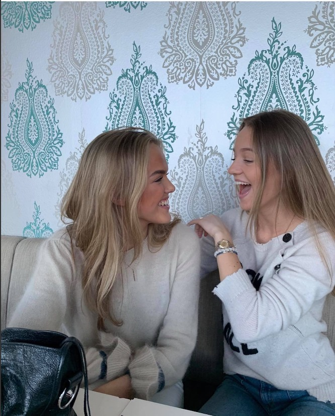

Julie kjæresten min
Julie er en grei jente. Hun er til tider passe snill. Gutter vil ha snille jenter har jeg lest, og etter å ha smugkikket på div nettstedr er det denne egenskapen svært mange gutter etterspør. Er dette egenskaper ei snill jente har: de vet hva de vil ha, de viser det, og de får det! viljesterk og selvsikker og trygg jente/dame som vet hva hun vil ei jente som gir beskjed til kjæresten dersom det er noe hun opplever som urimelig ei jente som krever endringer dersom det er noe som ikke fungerer i forholdet mellom de to
Eller derimot dette: jeg gjør alt for deg i jente som er easygoing i betydningen av å alltid være fornøyd, aldri protestere på noe, aldri aldri aldri blir irritert over kjærestens væremåte eller handlinger eller holdninger. Som aldri klager over noe som helst (av å måtte gjøre mye husarbeid). Jfr med tråden Hvorfor snille gutter ikke får dame. Jenter ønsker seg ikke snille gutter. Gutter derimot ønsker seg snille damer. Har jeg funnet nøkkelen til hvorfor flere og flere er single. Neida tror ikke det.
Kontakt meg på email: litenjente@gmail.com
Telefon: 987644312